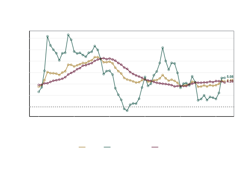
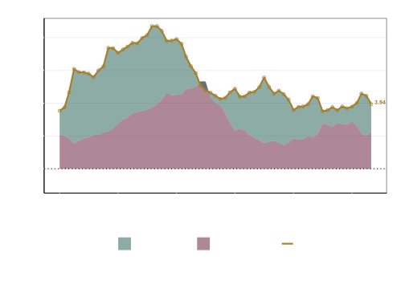
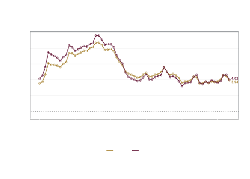
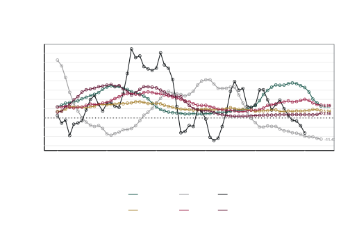
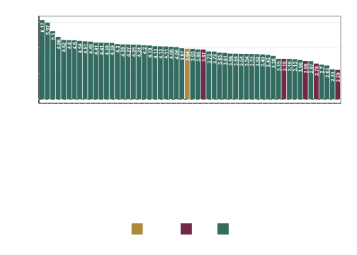
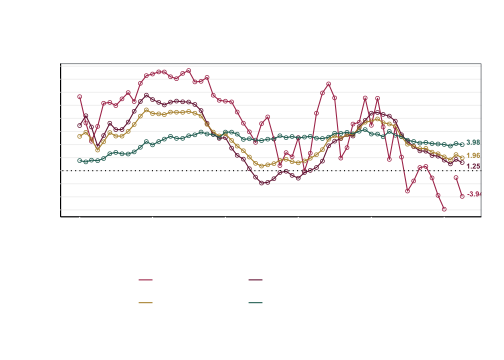
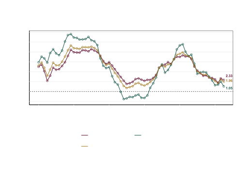

README
Inflación general, subyacente y no subyacente
Este repositorio contiene los códigos para automatizar la descarga de las series de tiempo del índice Nacional de Precios al Consumidor, y sus desagregaciones, para hacer el reporte sobre el comportamiento de los precios.
El índice de precios al consumidor en February de 2026 registro un valor de 144.307, por su parte los índices subyacente y no subyacente tuvieron un valor de 143.9897602 y 144.9539142, respectivamente.

La inflación anual para el INPC general, subyacente y no subyacente fue de 4.02%, 4.5% y 2.44%, respectivamente. Por su parte, las variaciones mensuales fueron de 0.5%, 0.46% y 0.64%, respectivamente.
| Variable | Fecha | Valor | Variación anual (%) | Variación mensual (%) |
|---|---|---|---|---|
| INPC | 2026-02-01 | 144.3070 | 4.023038 | 0.5007382 |
| No subyacente | 2026-02-01 | 144.9539 | 2.441333 | 0.6416061 |
| Subyacente | 2026-02-01 | 143.9898 | 4.497411 | 0.4593792 |
INPC, subyacente y no subyacente al mes de interés
Dentro de la inflación subyacente, el componente de Servicios tuvo una variación anual de 4.45% y el de Mercancías de 4.55%. Por su parte, dentro del componente no subyacente, los productos agropecuarios tuvieron una variación anual de 4.5% y los energéticos y tarifas autorizadas de 0.89%.
| Variable | Fecha | Valor | Variación anual (%) | Variación mensual (%) |
|---|---|---|---|---|
| No subyacente - Agropecuarios | 2026-02-01 | 163.0536 | 4.4953479 | 1.4484563 |
| No subyacente - Energéticos y tarifas autorizadas | 2026-02-01 | 131.3684 | 0.8850045 | 0.0173098 |
| Subyacente - Mercancias | 2026-02-01 | 150.4469 | 4.5479314 | 0.3919605 |
| Subyacente - Servicios | 2026-02-01 | 136.9119 | 4.4494032 | 0.5235898 |
Componentes del INPC al mes de interés

Canasta de consumo mínimo
La inflación de los productos de la canasta básica fue de 3.84% anual y 0.52% mensual. La diferencia en puntos porcentuales entre la inflación general y la de la canasta de consumo mínimo fue de 0.18 puntos porcentuales anual y -0.02 puntos porcentuales mensual.

Productos básicos
En esta sección se analiza el comportamiento de cinco productos básico: Tortilla, Frijol, Huevo, Leche y Carne de res. En February de 2026, la variación anual de estos productos fue de 1.71% para la tortilla, -10.22% para el frijol, -15.41% para el huevo, 9.38% para la leche y 13.98% para la carne de res. Por su parte, las variaciones mensuales fueron de 0.23% para la tortilla, -1.81% para el frijol, -2.63% para el huevo, 0.15% para la leche y 0.3% para la carne de res.
| Variable | Fecha | Valor | Variación anual (%) | Variación mensual (%) |
|---|---|---|---|---|
| Carne res | 2026-02-01 | 171.312 | 13.982315 | 0.2950681 |
| Frijol | 2026-02-01 | 150.507 | -10.216366 | -1.8135915 |
| Huevo | 2026-02-01 | 168.125 | -15.407528 | -2.6254214 |
| INPC | 2026-02-01 | 144.307 | 4.023038 | 0.5007382 |
| Leche | 2026-02-01 | 171.067 | 9.383472 | 0.1545640 |
| Tortilla | 2026-02-01 | 159.801 | 1.710870 | 0.2345901 |
INPC, tortilla, frijol, huevo, leche y carne de res al mes de interés

Inflación por Ciudad
La inflación promedio en las ciudades de la Zona Libre de la Frontera Norte (ZLFN) fue de 3.03.

| Ciudad | Fecha | Valor | Variación anual (%) | Variación mensual (%) |
|---|---|---|---|---|
| Chetumal, Q.R. | 2026-02-01 | 145.900 | 5.693236 | 0.8334831 |
| Atlacomulco, Méx. | 2026-02-01 | 145.274 | 5.442932 | 0.9239704 |
| Oaxaca, Oax. | 2026-02-01 | 150.436 | 5.179405 | 0.1098016 |
| Coatzacoalcos, Ver. | 2026-02-01 | 144.212 | 5.048769 | 0.6188732 |
| Cancún, Q. Roo. | 2026-02-01 | 145.861 | 4.970710 | 0.5958744 |
| Tepatitlán, Jal. | 2026-02-01 | 150.979 | 4.853809 | 0.4023302 |
| Tulancingo, Hgo. | 2026-02-01 | 142.813 | 4.827652 | 0.5477523 |
| Tepic, Nay. | 2026-02-01 | 145.821 | 4.792601 | 0.6599248 |
| Campeche, Camp. | 2026-02-01 | 150.208 | 4.762901 | 0.7140798 |
| Aguascalientes, Ags. | 2026-02-01 | 145.106 | 4.688041 | 0.5000554 |
| San Andrés Tuxtla, Ver. | 2026-02-01 | 148.095 | 4.687412 | 0.6162187 |
| Toluca, Edo. de Méx. | 2026-02-01 | 138.386 | 4.670565 | 0.5514906 |
| San Luis Potosí, S.L.P. | 2026-02-01 | 146.909 | 4.595811 | 0.6487990 |
| Jacona, Mich. | 2026-02-01 | 150.896 | 4.592053 | 0.7195397 |
| Guadalajara, Jal. | 2026-02-01 | 145.881 | 4.507518 | 0.5056942 |
| Área Met. de la CDMX | 2026-02-01 | 141.030 | 4.458155 | 0.4852190 |
| Tehuantepec, Oax. | 2026-02-01 | 153.355 | 4.388461 | 0.5916578 |
| Tuxtla Gutiérrez, Chis. | 2026-02-01 | 144.571 | 4.382640 | 0.5193848 |
| Córdoba, Ver. | 2026-02-01 | 148.930 | 4.283954 | 0.2787578 |
| Veracruz, Ver. | 2026-02-01 | 143.644 | 4.275738 | 1.0353656 |
| Pachuca, Hgo. | 2026-02-01 | 144.729 | 4.241573 | 0.6901494 |
| Iguala, Gro. | 2026-02-01 | 143.730 | 4.125011 | 0.6089878 |
| Mérida, Yuc. | 2026-02-01 | 151.837 | 4.048544 | 0.3635474 |
| Matamoros, Tamps. | 2026-02-01 | 149.890 | 4.047647 | -0.0420132 |
| Nacional | 2026-02-01 | 144.307 | 4.023038 | 0.5007382 |
| León, Gto. | 2026-02-01 | 141.151 | 3.982467 | 0.5628344 |
| Cuernavaca, Mor. | 2026-02-01 | 143.305 | 3.896151 | 0.4810018 |
| Querétaro, Qro. | 2026-02-01 | 143.190 | 3.880558 | 0.6162473 |
| Torreón, Coah. | 2026-02-01 | 149.178 | 3.860533 | 0.6368310 |
| Puebla, Pue. | 2026-02-01 | 145.481 | 3.804522 | 0.7786252 |
| Colima, Col. | 2026-02-01 | 145.566 | 3.724553 | 0.4998550 |
| Durango, Dgo. | 2026-02-01 | 146.764 | 3.702552 | 0.5914970 |
| Cd. Juárez, Chih. | 2026-02-01 | 143.580 | 3.658889 | 0.3319241 |
| Chihuahua, Chih. | 2026-02-01 | 142.421 | 3.593224 | 0.4322746 |
| Morelia, Mich. | 2026-02-01 | 144.241 | 3.570069 | 0.4058249 |
| Monterrey, N.L. | 2026-02-01 | 142.518 | 3.562838 | 0.2878072 |
| Tampico, Tamps. | 2026-02-01 | 139.742 | 3.504926 | 0.2971406 |
| Esperanza, Son. | 2026-02-01 | 143.271 | 3.501560 | 0.4318110 |
| Izúcar de Matamoros, Pue. | 2026-02-01 | 141.299 | 3.397582 | 0.8414216 |
| Huatabampo, Son. | 2026-02-01 | 146.960 | 3.375750 | 0.4525011 |
| Monclova, Coah. | 2026-02-01 | 140.196 | 3.336798 | 0.4240566 |
| Culiacán, Sin. | 2026-02-01 | 147.929 | 3.300210 | 0.6456661 |
| Villahermosa, Tab. | 2026-02-01 | 141.285 | 3.276244 | 0.6210251 |
| Zacatecas, Zac. | 2026-02-01 | 143.165 | 3.260125 | 0.4349504 |
| Cortazar, Gto. | 2026-02-01 | 142.229 | 3.259788 | 0.5493029 |
| Tapachula, Chis. | 2026-02-01 | 150.158 | 3.238271 | 0.1801345 |
| Cd. Jiménez, Chih. | 2026-02-01 | 142.619 | 3.155740 | -0.0182271 |
| Hermosillo, Son. | 2026-02-01 | 142.225 | 3.069063 | 0.5038442 |
| Saltillo, Coah. | 2026-02-01 | 142.541 | 3.056835 | 0.3329392 |
| Tlaxcala, Tlax. | 2026-02-01 | 142.430 | 2.987751 | 0.7925837 |
| Acapulco, Gro. | 2026-02-01 | 146.017 | 2.919471 | 0.1852525 |
| Cd. Acuña, Coah. | 2026-02-01 | 145.694 | 2.913774 | 0.5320067 |
| Fresnillo, Zac. | 2026-02-01 | 147.766 | 2.710856 | 0.6093783 |
| La Paz, B.C.S. | 2026-02-01 | 139.129 | 2.489889 | 0.2926696 |
| Mexicali, B.C. | 2026-02-01 | 144.268 | 2.477625 | 0.3952679 |
| Tijuana, B.C. | 2026-02-01 | 146.112 | 2.048485 | 0.1151126 |
Inflación por ciudad al mes de interés
índice Nacional de Precios al Productor
El INPP registró una variación anual de 1.66% y una variación mensual de 0.16% en February de 2026.
Por grupos de actividad económica, el INPP primarias, el INPP secundarias sin petróleo y el INPP terciarias tuvieron una variación anual de -6.3%, 1.04%, y 3.77%, respectivamente. Las variaciones mensuales para el INPP primarias, el INPP secundarias sin petróleo y el INPP terciarias fueron de -0.1%, -0.04% y 0.57%, respectivamente.

El INPP de bienes finales tuvo una variación anual de 1.77% y una variación mensual de -0.01%. Por su parte, el INPP intermedios tuvo una variación anual de 1.39% y una variación mensual de 0.58%.
